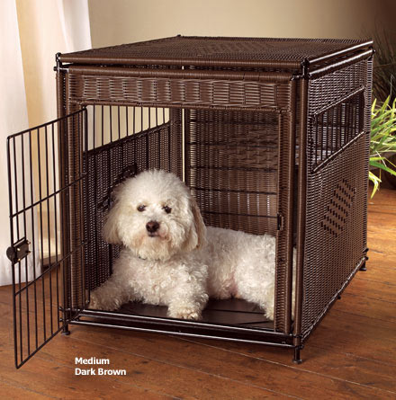

Taking your dog on holiday
To go on holiday with you, your dog will need:
1> To be permanently identified with a microchip
2> To be up to date with normal vaccinations
3> To be comfortable in a crate or carrier for a long period
You may also need to stock up on travel aides, such as pheromone sprays for your dog's carrier, which will usually need to be applied a few days before travelling.
Taking Your Dog Abroad
It is generally a good idea to start thinking about preparations for travelling abroad with your dog as early as possible , even six months in advance is not too soon! Travelling within the UK is relatively simple in comparison and, in addition to the above, your pet may need:
1> To have a vaccination against rabies at least 21 days before travel
2> A tapeworm treatment one to five days before leaving and returning to the UK
3> A Pet Passport issued by a vet, with the above recorded